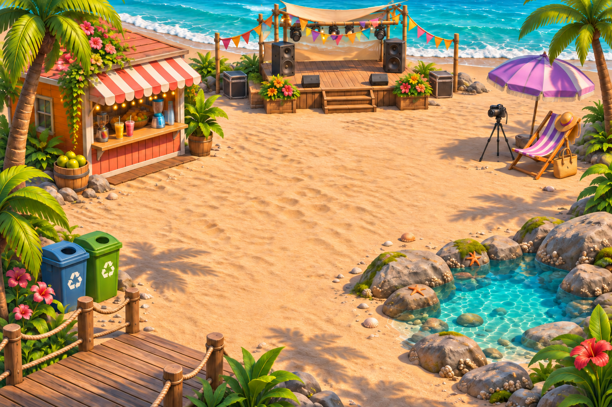

You’re Mia. Help five neighbours keep plastic out of the sea.
Speak first, then press “I’ve said my idea”. Characters have scripted replies. Typing is optional. Open ⚑ Mission for your next step.
Loading the beach…